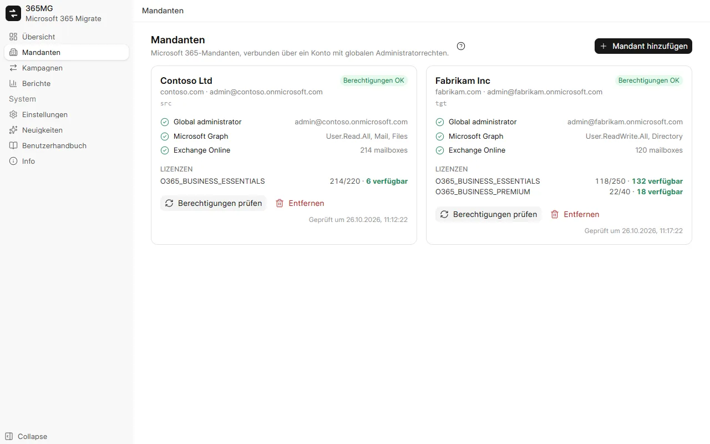
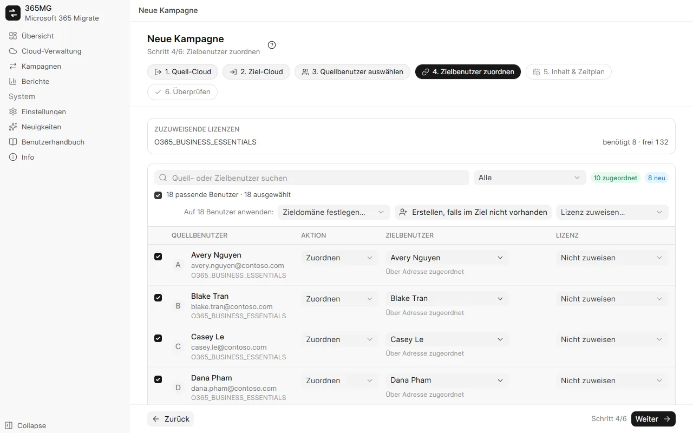
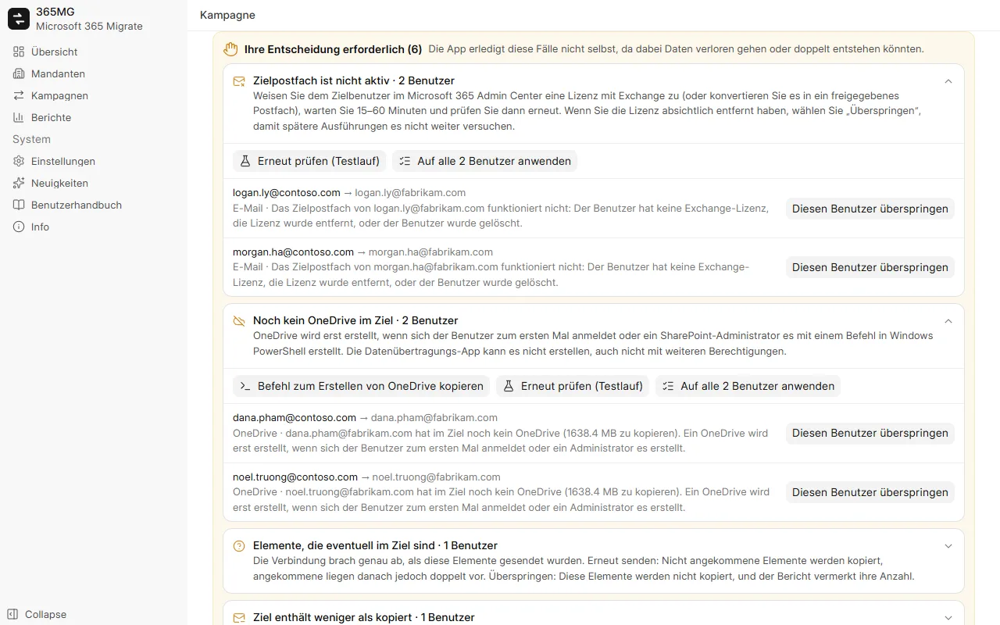

Benutzerhandbuch
Von der Installation von 365MG bis zum letzten Bericht. Jeder Teil enthält Screenshots; die geführten Touren spielen die wichtigsten Aufgaben mit einem animierten Mauszeiger ab.
1. Installation
365MG läuft unter Windows 10 oder 11 (64 Bit) mit Microsoft Edge WebView2, das in Windows bereits enthalten ist. Das Installationsprogramm stellt der Autor bereit: Schreiben Sie an die unten stehende Adresse.
- Führen Sie
365MG_x.y.z_x64-setup.exeaus und folgen Sie dem Installationsprogramm. - Öffnen Sie 365MG über das Startmenü. Die Daten bleiben auf diesem PC in
%APPDATA%\com.tuanhd.365mg. - Wählen Sie unter Einstellungen die Sprache der Oberfläche und einen temporären Ordner auf einem zweiten Laufwerk.
2. Bevor Sie beginnen
- Ein Konto als globaler Administrator sowohl im Quell- als auch im Zielmandanten.
- Genügend Lizenzen mit Exchange Online (und OneDrive) im Ziel für die Benutzer, die Sie erstellen oder zuordnen.
- Ein PC, der während des Kopierens eingeschaltet bleiben kann, mit schneller, stabiler Verbindung: Die Daten laufen über ihn.
- Ein zweites Laufwerk für den temporären Ordner; nur OneDrive-Dateien ab 4 MB laufen darüber.
3. Mandanten hinzufügen
- Öffnen Sie Mandanten und klicken Sie auf Mandant hinzufügen.
- Melden Sie sich im sich öffnenden Browserfenster als globaler Administrator an und akzeptieren Sie die Berechtigungen.
- Zurück in 365MG zeigt der Mandant seine Domänen, die Berechtigungsprüfungen und seine Lizenzen. Verwenden Sie Berechtigungen prüfen, nachdem Sie etwas im Admin Center geändert haben.

4. Kampagne erstellen
Eine Kampagne verschiebt eine Gruppe von Benutzern von einem Quellmandanten in einen Zielmandanten. Der Assistent hat sechs Schritte; Titel, Schritte und Filter bleiben oben sichtbar, Zurück / Weiter / Kampagne speichern bleiben unten.
- Quellmandant und Zielmandant: je ein Schritt.
- Quellbenutzer auswählen: nach Lizenz, Domäne oder Status filtern, Benutzer in der Liste markieren und zur Auswahl hinzufügen.
- Zielbenutzer zuordnen: 365MG schlägt einen Zielbenutzer nach Adresse, Alias oder Anzeigename vor. Zeilen markieren und dann Zieldomäne festlegen…, Erstellen, falls im Ziel nicht vorhanden oder Lizenz zuweisen… gesammelt anwenden; das Kontrollkästchen über der Liste markiert alle Zeilen, die der Filter zeigt.
- Inhalt & Zeitplan: E-Mail, OneDrive, Kontakte, Kalender; Junk-E-Mail überspringen; einmal oder alle N Stunden ausführen; Anzahl der Threads.
- Überprüfen: Zusammenfassung und benötigte Lizenzen prüfen, dann Kampagne speichern.

5. Zielbenutzer vorbereiten
Auf der Kampagnenseite erstellt Benutzer erstellen & Lizenzen zuweisen die mit „Erstellen“ markierten Zielbenutzer und weist jedem Benutzer die gewählte Lizenz zu. Fehlgeschlagene Zeilen zeigen den Grund; beheben Sie ihn und führen Sie den Vorgang erneut aus.
Neue Benutzer erhalten ein zufälliges Anfangskennwort, das sie bei der ersten Anmeldung ändern müssen. Exportieren Sie die Kennwörter über das Menü ⋯ als CSV, übergeben Sie sie und löschen Sie dann die Datei.
6. Wellen und Testläufe
Markieren Sie auf der Registerkarte Benutzer Benutzer und verwenden Sie In Welle verschieben, um eine große Migration aufzuteilen. Die Ausführungsleiste kann dann jeweils eine Welle starten; geplante Ausführungen synchronisieren jede bereits geöffnete Welle weiter.
Testlauf (nur zählen) liest beide Seiten und meldet, wie viele Elemente, Dateien und Megabyte eine echte Ausführung kopieren würde. Er schreibt nichts in das Ziel und prüft außerdem, ob jedes Zielpostfach und jedes OneDrive existiert.
7. Ausführen, anhalten, fortsetzen
Die Ausführungsleiste oben auf jeder Registerkarte der Kampagne zeigt, was die Kampagne gerade tut und was als Nächstes folgt.
| Status | Angezeigt | Schaltflächen |
|---|---|---|
| Noch nicht ausgeführt | Der Zeitplan | Jetzt starten, Testlauf |
| Wird kopiert | Verstrichene Zeit, aktive und wartende Threads | Anhalten |
| Angehalten | Letzte Ausführung | Fortsetzen (kopiert den Rest) |
| Synchronisiert | Wann sie endete und die nächste geplante Ausführung | Erneut ausführen (neue Daten abrufen), Zeitplan anhalten |
Anhalten beendet die Threads und hält den Zeitplan an. Alles Kopierte bleibt in den Journalen, daher wird beim Fortsetzen nie doppelt kopiert. Die Registerkarte Kopierfortschritt zeigt jedes Postfach und OneDrive mit seiner Geschwindigkeit; ein Thread, der nicht mehr vorankommt, wird automatisch neu gestartet.
8. Ihre Entscheidung erforderlich
Trifft eine Ausführung auf etwas, das sie nicht allein klären sollte, zeigt die Kampagne einen Bereich Ihre Entscheidung erforderlich, nach Art gruppiert, mit einer Erklärung und den Aktionen für jeden Benutzer.
| Art | Was zu tun ist |
|---|---|
| Zielpostfach funktioniert nicht | Weisen Sie dem Benutzer eine Lizenz zu (oder machen Sie daraus ein freigegebenes Postfach), warten Sie 15–60 Minuten, dann Erneut prüfen. Wurde die Lizenz absichtlich entfernt: Diesen Benutzer überspringen. |
| Kein OneDrive im Ziel | Befehl zum Erstellen von OneDrive kopieren, in Windows PowerShell als SharePoint-Administrator ausführen oder den Benutzer sich einmal anmelden lassen; dann erneut prüfen. |
| Zielbenutzer wurde neu erstellt | Von Grund auf neu kopieren in das neue Postfach bzw. OneDrive oder überspringen. |
| Elemente mit unbekanntem Ergebnis | Elemente erneut senden (ein bereits vorhandenes Element liegt dann doppelt vor) oder Diese Elemente überspringen. |
| Ziel enthält weniger als kopiert | Meist absichtlich im Ziel gelöscht; mit Verstanden bestätigen. |

9. E-Mail-Gruppen
Wählen Sie auf der Registerkarte E-Mail-Gruppen Quellgruppen aus und klicken Sie auf Gruppen erstellen & Mitglieder hinzufügen. Graph kann nur Microsoft 365-Gruppen erstellen, daher werden Verteilerlisten und E-Mail-aktivierte Sicherheitsgruppen zu Microsoft 365-Gruppen mit demselben Alias, die an die Posteingänge der Mitglieder zustellen und externe Absender akzeptieren. Mitglieder ohne Zielbenutzer werden pro Gruppe aufgeführt.
10. Berichte
Berichte zeigt pro Kampagne die Quell- und Kopierzahlen pro Benutzer und insgesamt, zu prüfende Benutzer, Gruppen und Hinweise. HTML exportieren schreibt eine einzelne Seite (hell und dunkel, mit Suche und Filter) und öffnet sie; CSV-Exporte listen Benutzer oder Gruppen auf.
11. Einstellungen und Sprachen
- Sprache: neun Sprachen, sofort übernommen; Arabisch stellt das Layout auf rechts nach links um.
- Temporärer Ordner: nicht auf Laufwerk C.
- Thread als hängend behandeln nach: Minuten ohne Fortschritt, bevor ein Thread neu gestartet wird (höchstens zweimal).
12. Updates
Neuigkeiten listet die Änderungen jeder Version auf. Wenn eine neuere Version veröffentlicht ist, zeigt die Seitenleiste sie an; Auf x.y.z aktualisieren lädt sie herunter, prüft die Signatur des Autors, schließt die App, installiert und öffnet sie wieder. Halten Sie laufende Kampagnen zuvor an und setzen Sie sie danach fort.
13. Problembehandlung
| Symptom | Ursache und Lösung |
|---|---|
| „Warten, bis die Berechtigungen der Datenübertragungs-App wirksam werden“ | Eine neue App wird von Exchange und SharePoint erst nach einigen Minuten akzeptiert; die Ausführung wartet selbstständig bis zu 30 Minuten. |
| Geschwindigkeit sinkt, viele Meldungen „Exchange drosselt“ | Exchange bzw. SharePoint begrenzen pro Postfach und pro App. Mehr Threads helfen einem einzelnen Postfach nicht; sie helfen, wenn viele Postfächer warten. |
| Zahlen im Ziel niedriger als in der Quelle | Prüfen Sie die Hinweise im Bericht: übersprungene Junk-E-Mails, per Entscheidung ausgelassene Elemente oder im Ziel gelöschte E-Mails. |
| Ein Postfach enthält im Ziel bereits E-Mails | 365MG lehnt das Kopieren in dieses Postfach bei der ersten Ausführung ab. Erlauben Sie es in der Kampagne nur, wenn kein anderes Tool hineinkopiert hat. |